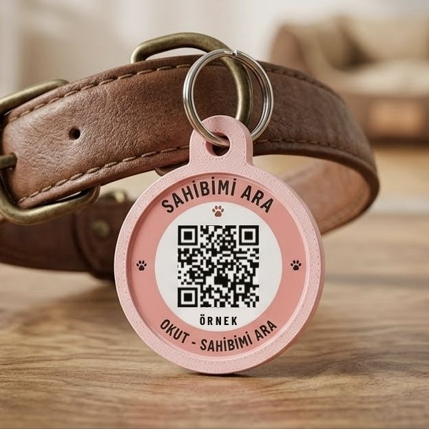
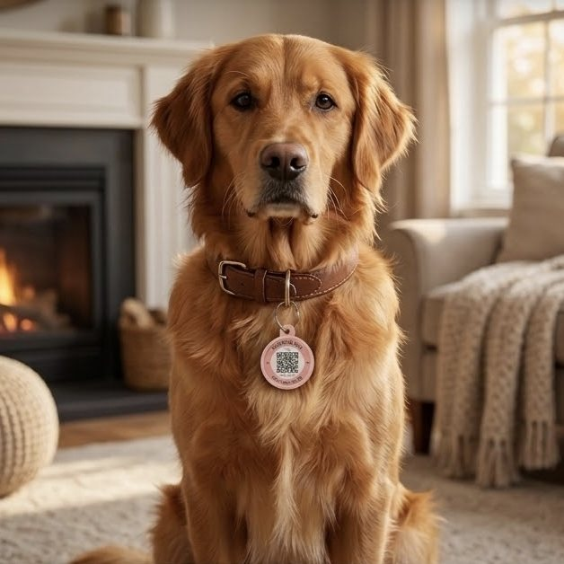

Köpek ve kedi için QR künye: kaybolursa sizi bulsunlar
Tasma QR, dostunuzun tasmasına takılan akıllı bir künyedir. Onu bulan kişi QR kodu telefon kamerasıyla okutur, sizi tek dokunuşla arar ve isterse bulunduğu yeri gönderir. Uygulama ya da üyelik gerekmez.


QR künye nasıl çalışır?
- Rozetinizi oluşturun. Dostunuzun adını ve size ulaşılacak numarayı girin, tasarımı seçin. Size bir PIN verilir; bilgileri bununla değiştirirsiniz.
- Tasmaya takın. Rozet halkasıyla gelir; tasmanın D halkasına takıp normal bir künye gibi kullanırsınız.
- Bulan kişi okutur. Telefon kamerasıyla QR kodu okutan kişi dostunuzun adını ve notunuzu görür, sizi arar, WhatsApp'tan yazar ya da konumunu gönderir.
Klasik künyeden farkı
Rozette telefon numaranız yazmaz; sokaktaki herkes numaranızı okuyamaz.
Numaranız değişirse PIN'inizle saniyede güncellersiniz; künyeyi yeniden yaptırmazsınız.
Tek dokunuşla açılır: okutan herkes kırmızı “KAYIP!” uyarısını ve ödül notunuzu görür.
Bulan kişi izin verirse bulunduğu yer haritayla size ulaşır, telefonunuza bildirim gelir.
“Çekingendir, ilaç kullanıyor” gibi notları bulan kişi görür ve doğru davranır.
Size ulaşılamazsa aranacak ikinci bir kişi ekleyebilirsiniz.
Rozet neyden yapılıyor?
Gövde 3D yazıcıda dayanıklı PETG plastikten basılır; ortasındaki yuvaya su geçirmez, lamine QR sticker yapıştırılır. Suya, güneşe ve çizilmeye dayanır, hafiftir. Gövde rengini siz seçersiniz. Ölçüler: Ø30 mm (kedi, küçük ırk) ve Ø35 mm (orta ve büyük ırk).
Fiyatlar
Üzerinde standart “SAHİBİMİ ARA” yazar. Gövde rengini seçersiniz; PIN kartıyla bilgilerinizi kendiniz girersiniz.
Dostunuzun adı ve 12 tasarımdan seçtiğiniz etiket basılır; gövde rengini de siz seçersiniz.
Ödeme havale/EFT ile yapılır; ödemeniz onaylanınca rozetiniz üretilip kargoya verilir.
Sık sorulan sorular
QR künye nedir?
Tasmaya takılan, üzerinde QR kod olan künyedir. Dostunuzu bulan kişi QR kodu telefon kamerasıyla okutur, sizi tek dokunuşla arar ve isterse konumunu gönderir. Uygulama indirmesi gerekmez.
Telefon numaram künyede yazar mı?
Hayır. Numaranız rozetin üzerinde yazmaz; yalnızca QR kodu okutan kişi sizi arayabilsin diye arama ekranında görünür. Bilgilerinizi PIN'inizle istediğiniz an değiştirirsiniz.
Numaram değişirse künyeyi yeniden yaptırmam gerekir mi?
Hayır. QR kod bilgileri değil, bilgileri gösteren sayfanın adresini taşır. Rozeti okutup PIN'inizle yeni numaranızı girmeniz yeterli.
QR künye kediler için uygun mu?
Evet. Tasma ya da göğüs tasması takan her dost için uygundur. Kediler için hafif Ø30 mm rozeti ve güvenlik kilitli (çekince açılan) kedi tasmasını öneririz.
QR künye mikroçipin yerine geçer mi?
Hayır. Mikroçip yasal zorunluluktur ve kalıcıdır. QR künye, dostunuzu bulan kişinin size dakikalar içinde ulaşabilmesi için ek bir önlemdir.
Tasma QR rozetinin fiyatı ne kadar?
Üzerinde standart “SAHİBİMİ ARA” yazan hazır rozet 250 TL, dostunuzun adı ve seçtiğiniz tasarımla basılan rozet 399 TL. İkisi de halkasıyla gelir; ödeme havale/EFT ile yapılır.
Diğer sorular için tüm sık sorulanlar sayfasına bakın. Dostunuz kaybolursa ne yapmanız gerektiğini kayıp köpek ve kayıp kedi rehberlerimizde, künyeye hangi bilgilerin yazılacağını künyeye ne yazılır yazımızda anlattık.